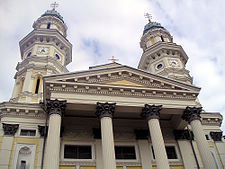

History
Uzhhorod (Ukrainian: Ужгород, Ukrainian pronunciation: [ˈuʒɦoˌrɔd]) is a city located in western Ukraine, at the border with Slovakia and near the border with Hungary. It is the administrative center of Zakarpattia Oblast (region), as well as the administrative center of the surrounding Uzhhorod Raion (district) within the oblast. The city itself is also designated as city of oblast significance, a status equivalent to that of a raion, and does not belong to Uzhhorod Raion. Population: 116,349 (2013 est.)[1].
The best known of the first city founders are early Slavs. One of their tribes – White Croats – settled the area of the modern Uzhhorod in the second half of the first millennium AD. During the 9th century a fortified castle changed into a fortified early feudal town-settlement, which became the centre of a new Slavonic principality, at the head of which was a legendary prince Laborets, who was vassal of Great Moravia. In 895 AD Hungarian tribes, headed by their leader Árpád, stormed the Hungvar fortress. The forces were not equal and Laborets was defeated and beheaded on the banks of the river that still carries his name.
After the arrival of the Hungarians, the small town began to extend its borders. In 1241–1242 the Mongols of Batu Khan burnt the settlement. In the early 14th century Uzhhorod showed strong resistance to the new Hungarian rulers of the Anjou dynasty. From 1318 for 360 years, the Drugeths (Italian counts) owned the town. During that period Philip Drugeth built Uzhhorod Castle. Together with the castle the city began to grow. By 1430, Uzhhorod acquired some privileges from the king and was officially called "The Privileged City of Ungvar" and became capital of Ung County. During the 16–17th centuries there were many handicraft corporations in Uzhhorod. In this period the city was engaged in the religious fight between primarily Protestant Transylvania and Catholic Austria. In 1646 the Uzhhorod Union was proclaimed and the Greek-Catholic church was established in Subcarpathia, in a ceremony held in the Uzhhorod castle by the Vatican Aegis. In 1707 Uzhhorod was the residence of Ferenc II Rákóczi, leader of the national-liberation war of Hungarians against Vienna. The beginning of the 19th century was characterized by economic changes, including the first factories in the city. The greatest influence on Uzhhorod among the political events of the 19th century was made by the Hungarian Revolution of 1848-1849, during which the native Hungarian nobility sought both get free of the Austrian Empire and to assert their right to dominate all other peoples of Hungary. 27 March 1848 was officially celebrated in the city as the overthrow of the monarchy in Hungary. In 1872 the first railway line opened, linking the city to the important railway junction of Chop.
Twentieth century
According to the 1910 census, the city had 16,919 inhabitants, of which 13,590 (80.3%) were Magyars, 1,219 (7.2%) Slovaks, 1,151 (6.8%) Germans, 641 (3.8%) Rusyns and 1.6% Czechs.[2] In the same time, the municipal area of the city had a population composed of 10,541 (39.05%) Hungarians, 9,908 (36.71%) Slovaks, and 5,520 (20.45%) Rusyns.[3] The First World War slowed down the tempo of city development. On 10 September 1919 Subcarpathia was officially allocated to the Republic of Czechoslovakia. Uzhhorod became the administrative center of the territory. During these years Uzhhorod developed into an architecturally modern city. After the Munich Treaty, Uzhhorod became part of the Slovak half of the new Czecho-Slovak state. After the First Vienna Award in 1938, Uzhhorod was retransferred to Hungary.[1]On 27 October 1944 the city was captured by the troops of the 4th Ukrainian Front of the Red Army. [2]This period brought significant changes. At the outskirts of Uzhhorod new enterprises were constructed and the old enterprises were renewed.[3] On 29 June 1945 Subcarpathian Ukraine was annexed by the Soviet Union and became a westernmost part of the Ukrainian SSR. That year the Uzhhorod State University (now Uzhhorod National University) was also opened. Since January 1946 Uzhhorod was the center of newly formed Zakarpatska oblast.[4]Since 1991 Uzhhorod has become one of 24 regional capitals within Ukraine. Of these, Uzhhorod is the smallest and westernmost.In 2002, after some controversy,[by whom?] a bust of Tomáš Masaryk, Czechoslovakia's first president, was unveiled in a main square of the city. A similar bust was unveiled in 1928 on the 10th anniversary of Czechoslovak independence, but was removed by the Hungarians when they took over the region in 1939.[5]